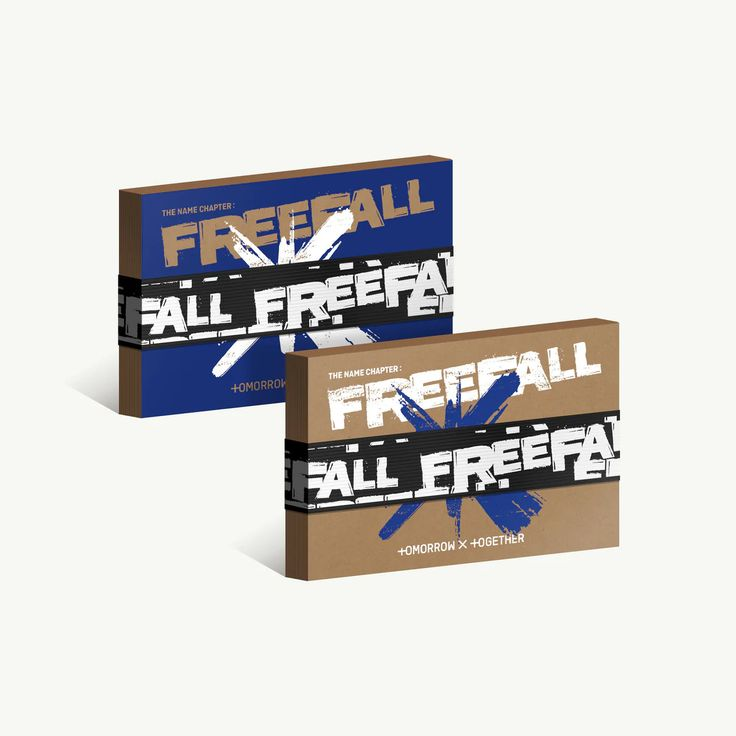
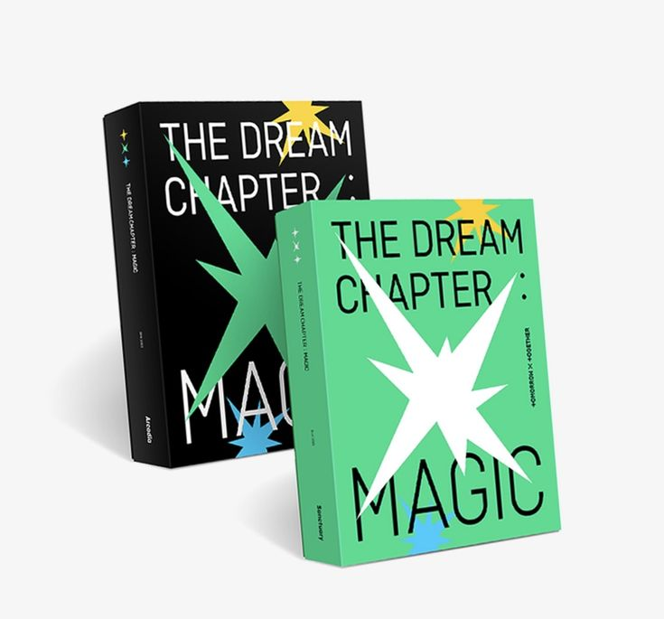
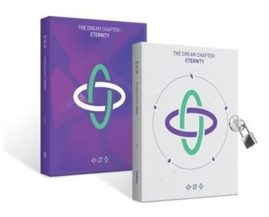

| Inicio | Productos |
|  |  |
| 3RD FULL-LENGTH ALBUM THE NAME CHAPTER:FREEFALL Nine tracks including “Growing Pain,” “Chasing That Feeling,” “Back for More (TXT Ver.),” “Dreamer,” “Deep Down,” “Happily Ever After,” “Skipping Stones,” “Blue Spring,” “Do It Like That,” and 'Chasing That Feeling (English Ver.) | |
|  | |
| 3RD MINI ALBUM MINISODE1 : BLUE HOUR their third mini-album, “minisode1 : Blue Hour” on October 26. | |